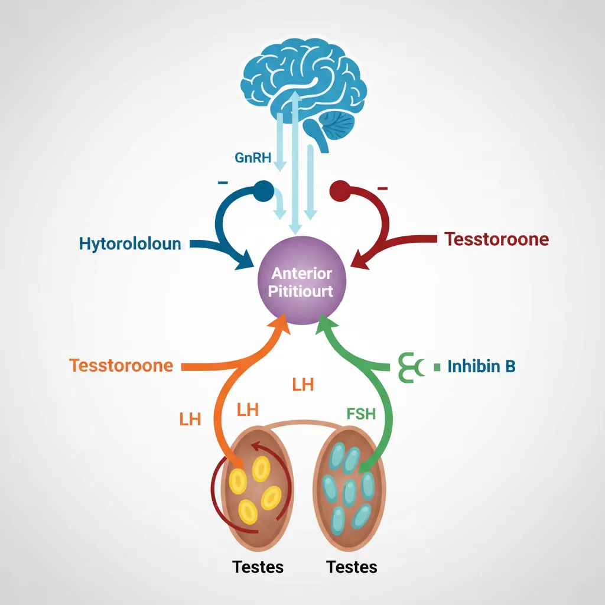
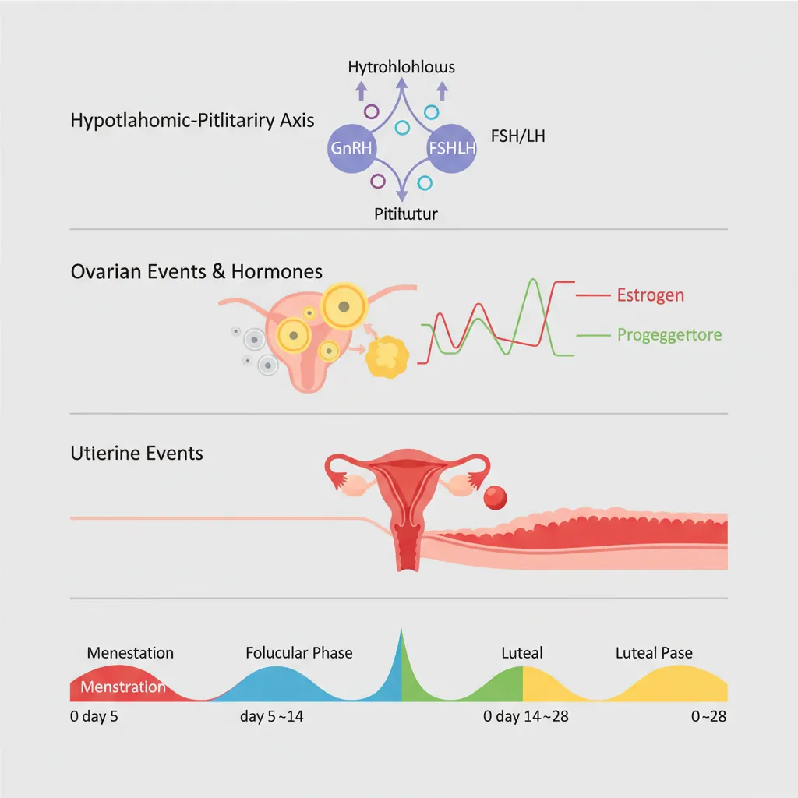
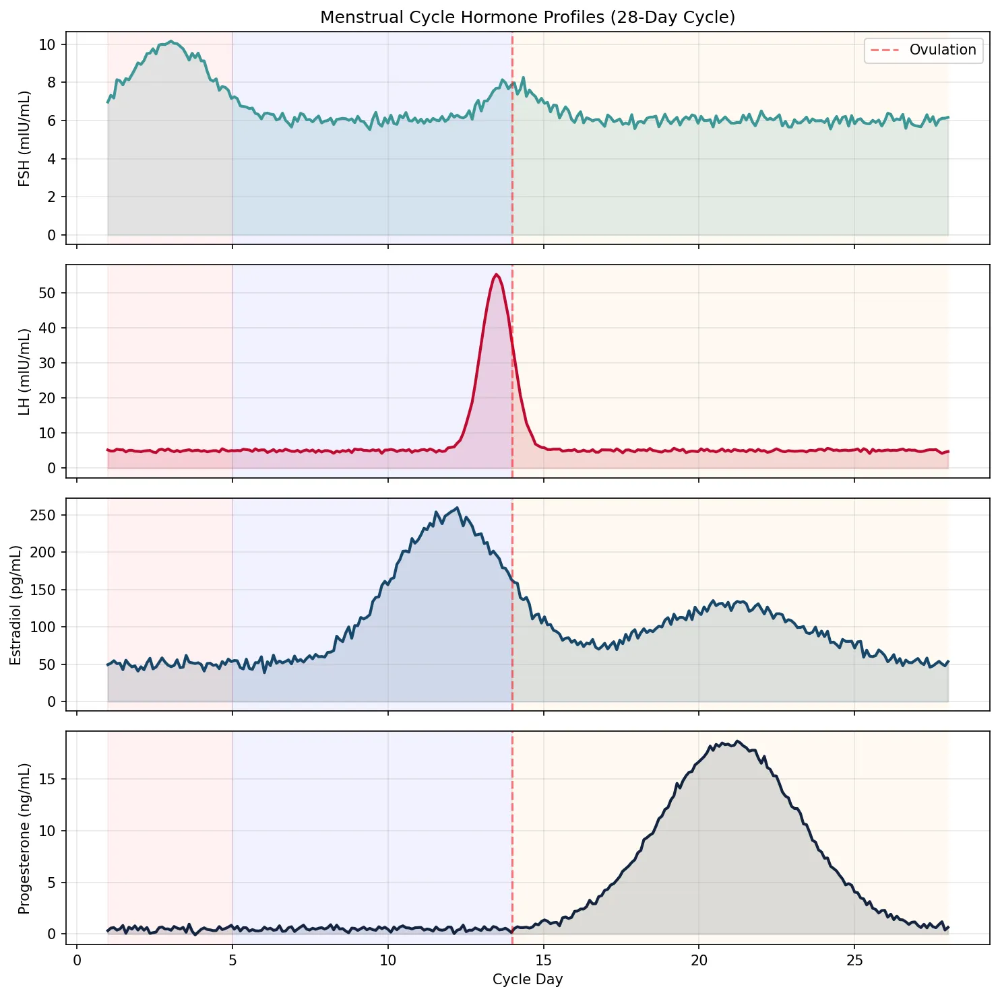
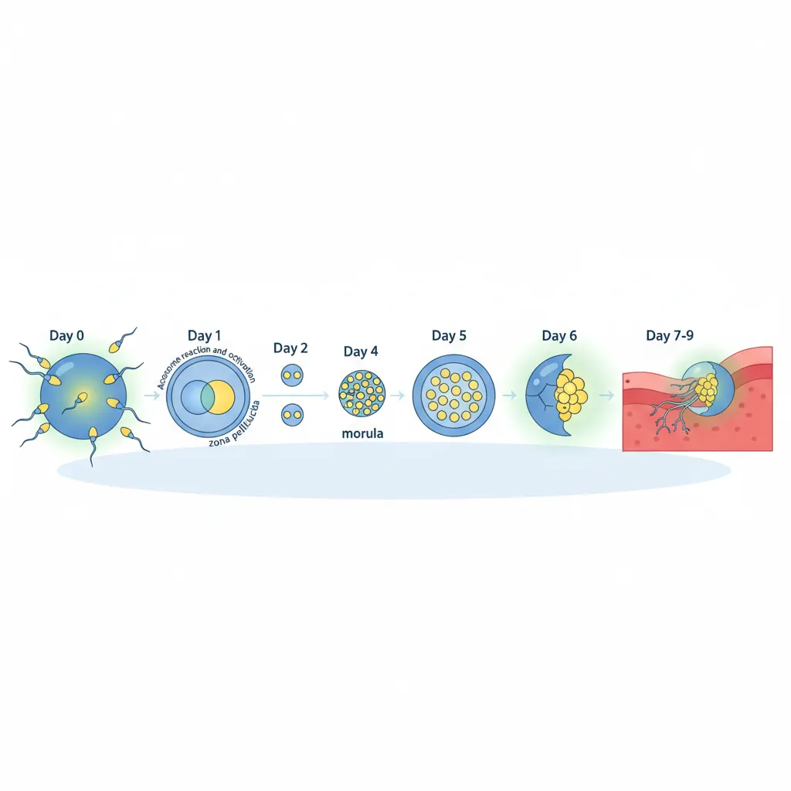
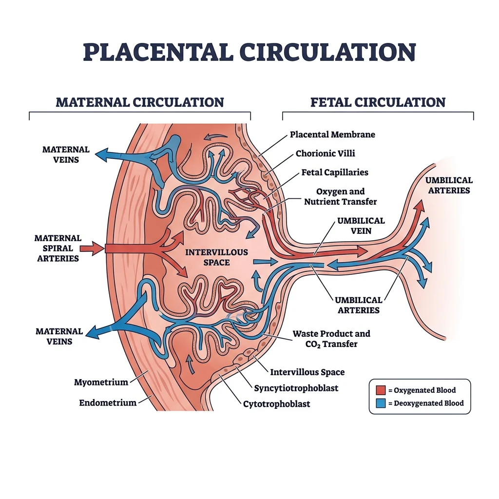
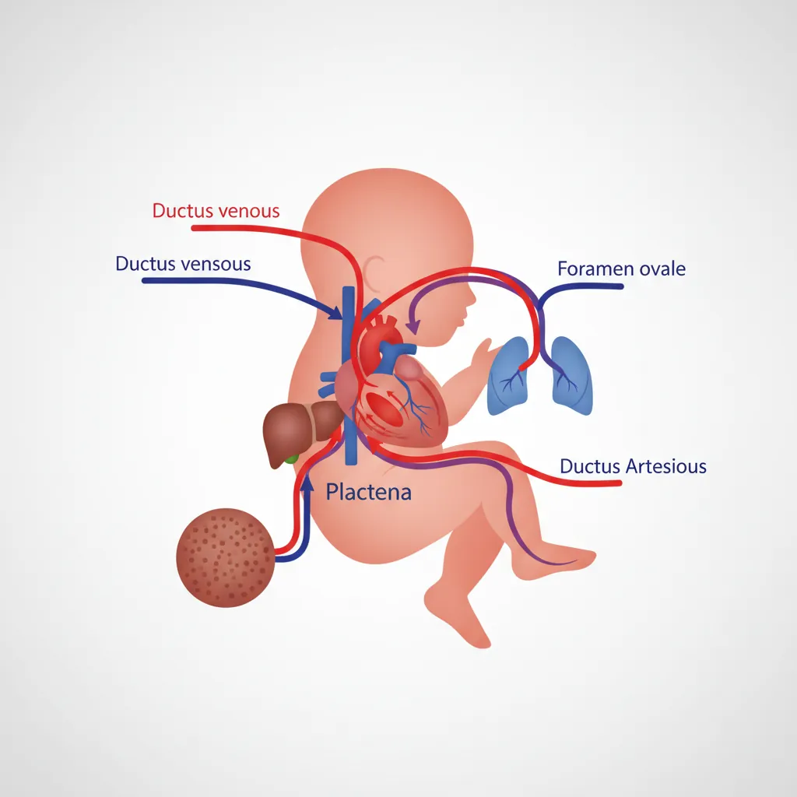
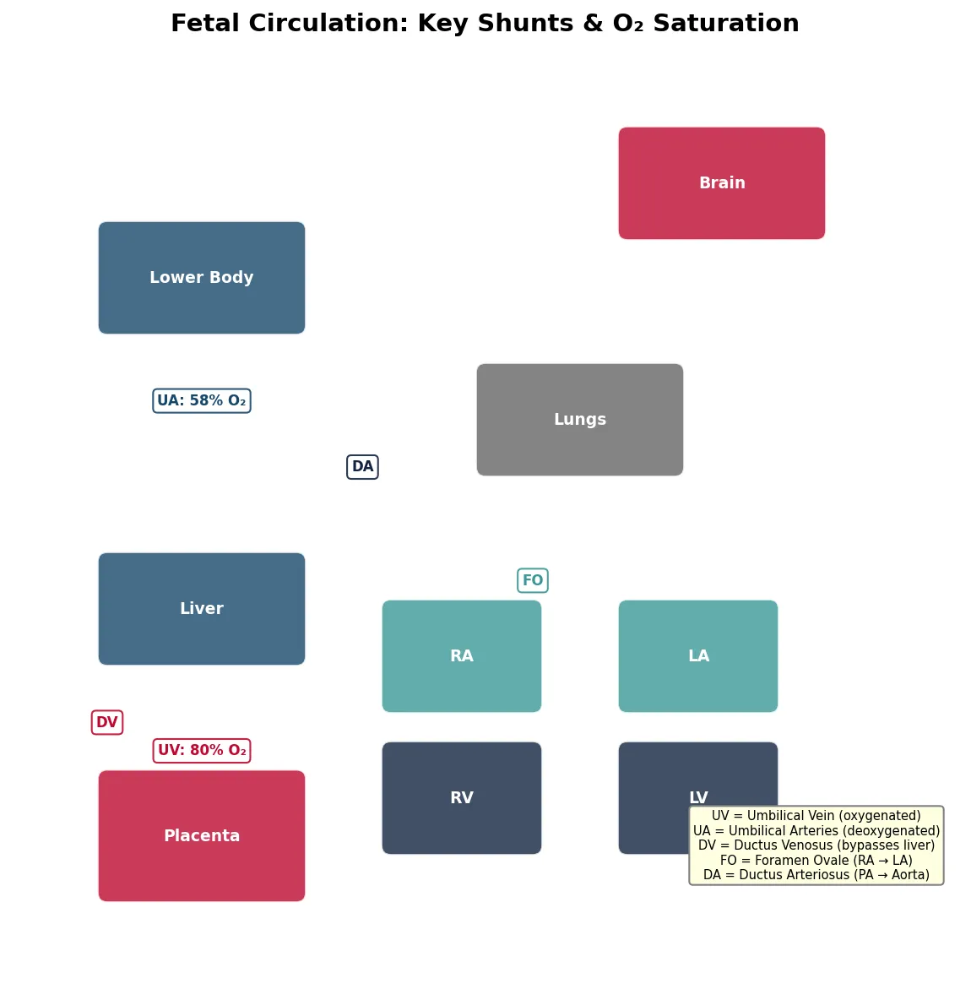

Physiology Mastery
Homeostasis & Feedback
Set points, feedback loops, allostasisNeurophysiology & Action Potentials
Neurons, action potentials, synapsesCardiac Electrophysiology & Hemodynamics
Heart rhythm, hemodynamics, cardiac outputRespiratory Mechanics & Gas Exchange
Breathing mechanics, gas exchange, V/QRenal Physiology & Fluid Balance
Nephron function, filtration, acid-baseGI Physiology & Absorption
Motility, secretion, nutrient absorptionEndocrine Regulation & Metabolism
Hormones, thyroid, adrenal, metabolismExercise Physiology & Adaptation
Acute responses, training adaptationsCellular & Membrane Physiology
Ion transport, signaling, second messengersBlood & Immune Physiology
Hematopoiesis, coagulation, immunityReproductive & Developmental
Reproduction, pregnancy, fetal physiologyIntegrative & Clinical Physiology
Stress, shock, sepsis, agingMale Reproductive Physiology
The male reproductive system is optimised for one purpose: the continuous production and delivery of spermatozoa. Unlike the cyclical nature of female reproduction, male reproductive function is continuous from puberty, with the testes producing approximately 200–300 million sperm daily. This remarkable output depends on a precisely regulated hormonal cascade, a specialised microenvironment, and an elaborate duct system.

Spermatogenesis
Spermatogenesis unfolds within the seminiferous tubules — tightly coiled tubes totalling ~250 metres in length per testis — and takes approximately 64–74 days from stem cell to mature spermatozoon. The process occurs in waves along the tubule, ensuring continuous sperm output.
Stages of Spermatogenesis
- Spermatogonia (2n): Stem cells at the basal compartment. Type A spermatogonia self-renew (maintaining the stem cell pool); Type B commit to differentiation → primary spermatocytes
- Primary Spermatocytes (2n): Undergo Meiosis I (the longest phase — ~24 days) with genetic recombination → two secondary spermatocytes (1n, 2c)
- Secondary Spermatocytes (1n): Complete Meiosis II rapidly → four spermatids (1n, 1c)
- Spermiogenesis: Morphological transformation of round spermatids into streamlined spermatozoa — acrosome formation (from Golgi), flagellum assembly (from centriole), mitochondrial sheath around midpiece, nuclear condensation (histones replaced by protamines), and cytoplasm shedding as residual bodies (phagocytosed by Sertoli cells)
- Spermiation: Release of mature spermatozoa into the tubular lumen
Temperature Dependence
Spermatogenesis requires a temperature 2–4°C below core body temperature (~34°C), which is why the testes are located externally in the scrotum. Three mechanisms maintain this lower temperature: (1) the cremaster muscle adjusts testicular position; (2) the pampiniform plexus — a counter-current heat exchanger where venous blood cools arterial blood; (3) sweat glands in scrotal skin. Cryptorchidism (undescended testis) impairs spermatogenesis and carries increased risk of testicular cancer if uncorrected.
Hormonal Regulation (HPG Axis)
The male hypothalamic-pituitary-gonadal (HPG) axis operates as a three-tiered feedback system:
| Level | Hormone | Target | Action |
|---|---|---|---|
| Hypothalamus | GnRH (pulsatile, every 90–120 min) | Anterior pituitary gonadotrophs | Stimulates LH and FSH release |
| Anterior Pituitary | LH | Leydig cells (interstitial) | Stimulates testosterone synthesis |
| Anterior Pituitary | FSH | Sertoli cells | Supports spermatogenesis; ↑ androgen-binding protein (ABP), ↑ inhibin B |
| Testis (Leydig) | Testosterone | Hypothalamus + pituitary | Negative feedback: ↓ GnRH, ↓ LH (and FSH to lesser extent) |
| Testis (Sertoli) | Inhibin B | Anterior pituitary | Selective negative feedback: ↓ FSH only |
Testosterone Actions
Testosterone acts directly or through conversion to dihydrotestosterone (DHT) (by 5α-reductase) or oestradiol (by aromatase):
- In utero: Male sexual differentiation (external genitalia require DHT; internal Wolffian ducts require testosterone)
- Puberty: Voice deepening, growth of penis/prostate, pubic/axillary/facial hair (DHT), growth spurt, muscle mass, sebaceous gland activity (acne)
- Adult: Maintains spermatogenesis (intratesticular testosterone must be 50-100× serum levels), libido, erythropoiesis, bone density, muscle mass, mood
- Oestradiol (from aromatisation): Epiphyseal closure (why men with aromatase deficiency keep growing), bone mineral density, feedback to hypothalamus
Seminal Fluid Composition
The ejaculate (~2–5 mL) is a composite fluid from multiple glands, each contributing specific components essential for sperm survival and function:
| Source | Volume (%) | Key Components | Function |
|---|---|---|---|
| Seminal Vesicles | ~60–70% | Fructose, prostaglandins, fibrinogen-like proteins | Fructose = energy substrate; prostaglandins stimulate female tract contractions; coagulation proteins form initial gel |
| Prostate | ~20–30% | Citric acid, zinc, PSA (prostatic specific antigen), acid phosphatase | PSA liquefies coagulated semen (after 20–30 min); zinc stabilises chromatin; acid phosphatase is a clinical marker |
| Bulbourethral (Cowper's) Glands | ~1–5% | Mucus-like glycoproteins | Pre-ejaculate lubricates urethra; neutralises residual urinary acid |
| Epididymis + Vas Deferens | ~5% | Sperm (15–200 million/mL) | Sperm maturation, storage, and transport |
Erectile & Ejaculatory Physiology
Erection is a parasympathetic event mediated by the pelvic splanchnic nerves (S2–S4). The key mediator is nitric oxide (NO), released from non-adrenergic, non-cholinergic (NANC) nerve endings and endothelial cells in the corpus cavernosum. NO activates guanylyl cyclase → ↑ cGMP → smooth muscle relaxation → arterial dilation → blood fills sinusoidal spaces → venous compression against the tunica albuginea (veno-occlusive mechanism) → tumescence.
PDE5 inhibitors (sildenafil, tadalafil) prevent cGMP breakdown, prolonging and enhancing the NO-mediated erection. They do not initiate erection — sexual stimulation (NO release) is still required.
Ejaculation is a sympathetic (T12–L2) event comprising two phases: (1) emission — sympathetic-mediated contraction of vas deferens, seminal vesicles, and prostate delivers fluid to the prostatic urethra; closure of the internal urethral sphincter prevents retrograde ejaculation; (2) expulsion — rhythmic contraction of the bulbospongiosus and ischiocavernosus muscles (somatic, pudendal nerve S2–S4) propels semen externally.
Female Reproductive Physiology
Female reproductive physiology is characterised by its cyclical nature — a precisely timed monthly sequence of hormonal events that prepares an oocyte for fertilisation and the uterus for implantation. Unlike the male, who produces gametes continuously from puberty, the female has a finite ovarian reserve established before birth.

Oogenesis & Folliculogenesis
Unlike the continuous production of sperm, oogenesis begins — and mostly completes its early stages — before birth:
- Fetal life (5th month): ~6–7 million oogonia undergo mitosis; many initiate meiosis I → become primary oocytes, arrested in prophase I (diplotene stage). This is the peak ovarian reserve.
- Birth: ~1–2 million primary oocytes remain (massive atresia has already occurred)
- Puberty: ~300,000–400,000 oocytes remain. Of these, only ~400–500 will ovulate during a woman's reproductive lifespan
- Menopause (~51 years): Ovarian reserve exhausted; cessation of menstrual cyclicity
Folliculogenesis describes the simultaneous development of the follicular structure surrounding the oocyte:
- Primordial follicle: Single layer of flat granulosa cells surrounding the arrested primary oocyte — can remain quiescent for decades
- Primary follicle: Granulosa cells become cuboidal; zona pellucida (glycoprotein shell) forms around oocyte
- Secondary (pre-antral) follicle: Multiple granulosa layers; theca cells form outer layer ← this is the two-cell, two-gonadotropin model
- Antral (tertiary) follicle: Fluid-filled antrum develops; follicle becomes FSH-dependent and produces oestradiol
- Graafian (dominant) follicle: One follicle is "selected" (highest FSH receptor density); grows to ~20 mm; produces the oestradiol surge that triggers ovulation
Menstrual Cycle Phases
The menstrual cycle averages 28 days (normal range: 21–35) and is divided into phases that describe events in the ovary and uterus simultaneously:
| Days (typical) | Ovarian Phase | Uterine Phase | Dominant Hormone | Key Events |
|---|---|---|---|---|
| 1–5 | Early follicular | Menstruation | ↓ Progesterone, ↓ oestradiol | Endometrial shedding; FSH rises (released from oestrogen-progesterone feedback) |
| 6–13 | Late follicular | Proliferative | ↑↑ Oestradiol (from dominant follicle) | Endometrial proliferation (glands, vessels, stroma thicken); dominant follicle selected; oestradiol rises progressively |
| Day 14 | Ovulation | — | LH surge (triggered by oestradiol "positive feedback") | Oocyte released; meiosis I completes → secondary oocyte arrested in metaphase II |
| 15–28 | Luteal | Secretory | ↑↑ Progesterone + oestradiol (from corpus luteum) | Endometrium becomes secretory (glycogen, spiral arteries); if no implantation → corpus luteum degenerates → progesterone/oestradiol fall → menstruation |
import numpy as np
import matplotlib.pyplot as plt
# Simulate menstrual cycle hormones over 28 days
days = np.linspace(1, 28, 280)
# FSH: rises early, dips mid-cycle, slight second peak
fsh = 6 + 4 * np.exp(-0.3 * (days - 3)**2) + 2 * np.exp(-0.8 * (days - 14)**2)
fsh += np.random.randn(len(days)) * 0.2
# LH: low baseline, massive surge at day 13-14
lh = 5 + 50 * np.exp(-2 * (days - 13.5)**2) + np.random.randn(len(days)) * 0.3
lh = np.clip(lh, 2, 60)
# Estradiol: rises in follicular phase, peaks before LH surge, second smaller luteal peak
estradiol = 50 + 200 * np.exp(-0.15 * (days - 12)**2) + 80 * np.exp(-0.08 * (days - 21)**2)
estradiol += np.random.randn(len(days)) * 5
# Progesterone: low in follicular, rises dramatically in luteal (corpus luteum)
progesterone = 0.5 + 18 * np.exp(-0.1 * (days - 21)**2) * np.heaviside(days - 14, 0.5)
progesterone = np.clip(progesterone, 0.3, 20)
progesterone += np.random.randn(len(days)) * 0.2
fig, axes = plt.subplots(4, 1, figsize=(10, 10), sharex=True)
axes[0].plot(days, fsh, color='#3B9797', linewidth=2)
axes[0].fill_between(days, fsh, alpha=0.15, color='#3B9797')
axes[0].set_ylabel('FSH (mIU/mL)')
axes[0].set_title('Menstrual Cycle Hormone Profiles (28-Day Cycle)')
axes[0].axvline(x=14, color='red', linestyle='--', alpha=0.5, label='Ovulation')
axes[0].legend()
axes[0].grid(True, alpha=0.3)
axes[1].plot(days, lh, color='#BF092F', linewidth=2)
axes[1].fill_between(days, lh, alpha=0.15, color='#BF092F')
axes[1].set_ylabel('LH (mIU/mL)')
axes[1].axvline(x=14, color='red', linestyle='--', alpha=0.5)
axes[1].grid(True, alpha=0.3)
axes[2].plot(days, estradiol, color='#16476A', linewidth=2)
axes[2].fill_between(days, estradiol, alpha=0.15, color='#16476A')
axes[2].set_ylabel('Estradiol (pg/mL)')
axes[2].axvline(x=14, color='red', linestyle='--', alpha=0.5)
axes[2].grid(True, alpha=0.3)
axes[3].plot(days, progesterone, color='#132440', linewidth=2)
axes[3].fill_between(days, progesterone, alpha=0.15, color='#132440')
axes[3].set_ylabel('Progesterone (ng/mL)')
axes[3].set_xlabel('Cycle Day')
axes[3].axvline(x=14, color='red', linestyle='--', alpha=0.5)
axes[3].grid(True, alpha=0.3)
# Add phase labels
for ax in axes:
ax.axvspan(1, 5, alpha=0.05, color='red')
ax.axvspan(5, 14, alpha=0.05, color='blue')
ax.axvspan(14, 28, alpha=0.05, color='orange')
plt.tight_layout()
plt.show()
print("Phases: Menstruation (days 1-5) | Follicular/Proliferative (5-14) | Luteal/Secretory (14-28)")

Ovarian & Uterine Cycles
The ovarian and uterine cycles run in parallel, linked by hormones — oestradiol and progesterone produced by the ovary dictate the structural and functional changes in the endometrium.
The Ovarian Cycle
- Follicular phase (days 1–14): FSH drives a cohort of antral follicles to grow; by day 7, one dominant follicle is selected (its granulosa cells have the highest FSH receptor density and produce the most oestradiol). Rising oestradiol exerts negative feedback → ↓ FSH → remaining follicles undergo atresia ("growth or die" principle).
- Ovulation (day 14): Oestradiol crosses a threshold (~200 pg/mL for 48+ hours) → switches from negative to positive feedback at the hypothalamus/pituitary → massive LH surge (10–20× baseline). LH triggers: (1) resumption of meiosis I → secondary oocyte; (2) luteinisation of granulosa cells; (3) follicular wall digestion by collagenase/prostaglandins → oocyte release with cumulus cells.
- Luteal phase (days 15–28): Collapsed follicle → corpus luteum (vascularised, steroidogenic). Produces progesterone (primary) + oestradiol. If no pregnancy → corpus luteum degenerates by day 28 (luteolysis) → hormone withdrawal → menstruation. If pregnancy → hCG from trophoblast rescues the corpus luteum ("rescue signal").
The Uterine Cycle
- Menstrual phase (days 1–5): Progesterone withdrawal → spiral artery vasoconstriction → ischaemia → necrosis and shedding of the functional layer (stratum functionalis); the basal layer (stratum basalis) remains for regeneration
- Proliferative phase (days 6–14): Oestradiol drives endometrial regeneration — gland elongation, stromal proliferation, angiogenesis; endometrium thickens from 1 mm to 3–5 mm
- Secretory phase (days 15–28): Progesterone transforms the endometrium for implantation — glands become tortuous and secrete glycogen; spiral arteries coil; stromal oedema (decidualisation); the "window of implantation" opens around days 20–24
Hormonal Coordination
The menstrual cycle demonstrates the most elegant example of positive feedback in human physiology. Throughout most of the cycle, oestradiol exerts negative feedback on LH and FSH — keeping them in check. But when oestradiol exceeds a critical concentration (~200 pg/mL) and is sustained for ~48 hours (from the dominant follicle at its peak), the feedback switches to positive, triggering the LH surge that causes ovulation.
Polycystic Ovary Syndrome (PCOS)
A 26-year-old woman presents with irregular periods (cycle length 45–90 days), acne, hirsutism, and difficulty conceiving. Labs: LH = 18 mIU/mL (↑), FSH = 5 mIU/mL (normal-low), LH:FSH ratio ~3.5:1, testosterone = 85 ng/dL (↑), DHEA-S = 350 µg/dL (mildly ↑), fasting insulin = 25 µU/mL (↑). Ultrasound shows bilateral enlarged ovaries with ≥12 small follicles (2–9 mm) arranged peripherally ("string of pearls").
Pathophysiology: PCOS involves a vicious cycle: (1) ↑ LH pulse frequency favours theca cell androgen production; (2) ↑ androgens are peripherally aromatised to oestrone → tonic (not cyclic) oestrogen → disrupts normal follicular selection → no dominant follicle → anovulation; (3) insulin resistance → hyperinsulinaemia → stimulates theca androgens + ↓ SHBG → free androgen excess; (4) weight gain worsens insulin resistance.
Management: Lifestyle modification (weight loss of 5-10% often restores ovulation); combined oral contraceptive pill (regulates cycles, ↓ androgens); metformin (↑ insulin sensitivity); clomiphene or letrozole for ovulation induction when fertility is desired.
Fertilization & Implantation
Fertilisation and implantation represent a remarkable sequence of precisely timed molecular events — from sperm preparation in the female tract, through the fusion of gametes, to the embryo's attachment and invasion of the endometrium. Each step presents potential barriers; their failure accounts for the fact that even in healthy couples, the per-cycle conception rate is only ~20–25%.

Sperm Capacitation & Acrosome Reaction
Freshly ejaculated sperm cannot fertilise an oocyte — they must undergo capacitation during ~6–7 hours of residence in the female reproductive tract (primarily in the uterus and fallopian tube). Capacitation involves:
- Removal of cholesterol from the sperm membrane (by albumin in uterine fluid) → ↑ membrane fluidity
- Removal of decapacitation factors (seminal plasma glycoproteins)
- Influx of Ca²⁺ and HCO₃⁻ → activation of protein kinase A → tyrosine phosphorylation of key proteins
- Hyperactivated motility: Flagellar beat pattern changes from symmetric to vigorous, whip-like asymmetric strokes — enabling sperm to penetrate the cumulus and zona pellucida
The acrosome reaction is triggered when capacitated sperm bind ZP3 (zona pellucida glycoprotein 3). The acrosomal membrane fuses with the plasma membrane, releasing acrosin and other enzymes that digest a path through the zona pellucida. Only acrosome-reacted sperm can fuse with the oocyte.
Oocyte Activation
At the moment of sperm-oocyte fusion, the sperm delivers PLCζ (phospholipase C zeta) into the oocyte cytoplasm, triggering repetitive calcium oscillations — rhythmic waves of intracellular Ca²⁺ release from the endoplasmic reticulum. These calcium oscillations are the universal signal for oocyte activation, which triggers:
- Cortical reaction: Cortical granules fuse with oocyte membrane → enzymes modify ZP proteins → "zona hardening" (the primary block to polyspermy)
- Completion of meiosis II: Oocyte was arrested in metaphase II since ovulation → now completes meiosis II → expels the second polar body → female pronucleus forms
- Pronuclear formation: Male and female pronuclei migrate toward each other; their membranes break down → chromosomes align on the first mitotic spindle → syngamy → the zygote is born
Embryo Transport
After fertilisation in the ampulla of the fallopian tube, the developing embryo is transported toward the uterus over ~3–4 days by: (1) peristaltic contractions of tubal smooth muscle (progesterone-modulated); (2) ciliary beating of the tubal epithelium (oestrogen-stimulated); and (3) tubal fluid flow. During transport, the embryo undergoes cleavage divisions (2-cell, 4-cell, 8-cell, morula → blastocyst).
By day 5–6 post-fertilisation, the blastocyst has formed: an outer trophoblast layer (will become placenta), an inner inner cell mass (will become the embryo proper), and a fluid-filled blastocoel. The blastocyst "hatches" from the zona pellucida (necessary for implantation) and enters the uterine cavity.
Implantation & Decidualization
Implantation occurs 6–7 days after fertilisation, during the "window of implantation" (days 20–24 of the menstrual cycle), when the endometrium is maximally receptive under progesterone influence.
- Apposition: Blastocyst loosely attached to endometrial epithelium (trophoblast to epithelium, mediated by selectins and integrins)
- Adhesion: Firm attachment via integrins (especially αvβ3), osteopontin, and HOX genes; pinopodes (membrane protrusions) on endometrial cells embrace the blastocyst
- Invasion: Syncytiotrophoblast (multinucleated outer trophoblast formed by cell fusion) invades the endometrial stroma, reaching maternal spiral arteries — establishing the haemochorial placenta (maternal blood directly bathes trophoblast)
Decidualisation is the progesterone-driven transformation of endometrial stromal cells into specialised decidual cells — enlarged, glycogen-rich cells that nourish the early embryo, regulate trophoblast invasion (preventing excessive penetration), and modulate local immune responses to tolerate the semi-allogeneic fetus.
Ectopic Pregnancy
A 30-year-old woman presents at 6 weeks amenorrhoea with unilateral pelvic pain and vaginal spotting. Serum β-hCG = 3,200 mIU/mL (positive but lower than expected for dates). Transvaginal ultrasound shows no intrauterine gestational sac but a complex adnexal mass with surrounding free fluid.
Pathophysiology: ~95% of ectopic pregnancies implant in the fallopian tube (usually the ampulla). Risk factors include: prior pelvic inflammatory disease (PID), tubal surgery, endometriosis, or IUD use. The tube cannot accommodate a growing pregnancy → rupture → life-threatening intra-abdominal haemorrhage. The β-hCG "discriminatory zone" (~1,500–2,000 mIU/mL) is the level above which an intrauterine pregnancy should be visible on transvaginal ultrasound — if it's not seen, ectopic must be suspected.
Management: Haemodynamically stable with unruptured ectopic: medical management with methotrexate (inhibits trophoblast proliferation by blocking dihydrofolate reductase). Ruptured or unstable: emergent surgical salpingectomy or salpingostomy.
Pregnancy Physiology
Pregnancy induces the most profound physiological adaptations a healthy human body will ever experience. Every organ system is remodelled to support the growing fetus, deliver nutrients, remove waste, and prepare for delivery and lactation. Understanding these adaptations is essential for distinguishing normal pregnancy changes from pathology.

Maternal Adaptations
| System | Adaptation | Mechanism | Clinical Impact |
|---|---|---|---|
| Cardiovascular | ↑ CO 30-50% (peaks ~32 weeks); ↓ SVR; ↑ HR 15-20 bpm; ↑ blood volume 40-50% | Progesterone → vasodilation; oestrogen → RAAS activation → Na⁺/H₂O retention; placental blood flow demands | Physiological systolic flow murmur; supine hypotension (uterus compresses IVC); peripheral oedema |
| Respiratory | ↑ Tidal volume 40%; ↑ minute ventilation 50%; ↓ FRC; mild respiratory alkalosis (PaCO₂ ~30 mmHg) | Progesterone stimulates medullary respiratory centre; ↑ O₂ demand (~20%); elevated diaphragm (4 cm) | Physiological dyspnoea; compensated respiratory alkalosis (renal HCO₃⁻ excretion); ↑ PaO₂ ~105 mmHg |
| Renal | ↑ GFR ~50%; ↑ renal plasma flow 80%; ↓ serum creatinine and BUN | ↑ CO → ↑ renal perfusion; relaxin → afferent arteriolar dilation | "Normal" creatinine > 0.8 mg/dL may indicate renal impairment in pregnancy; glucosuria common (↑ filtered glucose exceeds tubular reabsorption) |
| Haematological | ↑ Plasma volume > ↑ RBC mass → dilutional anaemia (Hb ~11 g/dL); hypercoagulable state | ↑ Factors VII, VIII, X, vWF, fibrinogen; ↓ protein S; ↓ fibrinolysis | 5× ↑ VTE risk; physiological anaemia of pregnancy; ↑ ESR (non-specific) |
| Metabolic | 1st trimester: anabolic (fat storage); 2nd-3rd trimester: "diabetogenic" (insulin resistance) | hPL (human placental lactogen) → insulin resistance → ensures glucose delivery to fetus | Gestational diabetes mellitus (GDM) in susceptible women; fasting hypoglycaemia (glucose diverted to fetus) |
Placental Structure & Function
The placenta is the most remarkable — and most transient — organ in the human body. By term, it weighs ~500 g with a surface area of ~11 m² and handles gas exchange, nutrient transfer, waste removal, and hormone production. The human placenta is haemochorial — maternal blood directly contacts the fetal trophoblast, with no intervening maternal vascular endothelium.
Exchange Mechanisms
- Simple diffusion: O₂, CO₂, water, urea, fatty acids (lipid-soluble substances cross freely; governed by Fick's law)
- Facilitated diffusion: Glucose (GLUT1 transporter — insulin-independent and constitutive, ensuring constant fetal glucose supply)
- Active transport: Amino acids (multiple carrier systems), Ca²⁺, iron, folate, ascorbic acid (against concentration gradient)
- Receptor-mediated endocytosis: IgG antibodies (providing passive immunity to the neonate), transferrin-bound iron, LDL cholesterol
- Pinocytosis: Large proteins, lipoproteins
Placental Hormone Production
The placenta is an endocrine powerhouse, producing hormones that maintain pregnancy, modify maternal metabolism, and prepare for lactation:
- hCG (human chorionic gonadotropin): Produced by syncytiotrophoblast from ~8 days post-fertilisation; peaks at 10–12 weeks; rescues corpus luteum → maintains progesterone. Used as the basis for pregnancy tests (detectable in urine ~14 days post-conception). β-hCG subunit is the specific marker.
- hPL (human placental lactogen): Structurally similar to GH; rises throughout pregnancy. Main actions: maternal insulin resistance (ensuring glucose for fetus), maternal lipolysis (providing FFA as alternative fuel for mother), mammary gland preparation.
- Progesterone: After 8–10 weeks, placenta takes over progesterone production from corpus luteum (the "luteal-placental shift"). Maintains myometrial quiescence, decidualisation, immune tolerance.
- Oestrogens (oestriol = E3): Oestriol requires fetal adrenal DHEA-S as precursor → placental aromatase → E3. Low maternal serum E3 may indicate fetal adrenal insufficiency or anencephaly. Promotes uterine growth, breast development, oxytocin receptor upregulation.
Fetal-Maternal Exchange
The fetus exists in a relatively hypoxic environment compared to the adult — fetal PaO₂ is only ~25–35 mmHg (versus ~100 mmHg in maternal arterial blood). Yet the fetus thrives because of several compensatory mechanisms:
- Fetal haemoglobin (HbF): Has higher O₂ affinity than adult HbA (left-shifted oxygen-dissociation curve) because HbF does not bind 2,3-DPG well. This means HbF "grabs" O₂ from maternal blood in the placental villi.
- Double Bohr effect: As CO₂ transfers from fetal to maternal blood, mother's Hb releases O₂ (rightward shift) while fetal Hb simultaneously gains affinity for O₂ (rightward shift of its CO₂ curve). This "double Bohr" effect enhances O₂ transfer at the placenta.
- High fetal cardiac output: ~200 mL/kg/min (versus ~70 in adults) — compensating for lower O₂ content per unit blood
- Higher fetal Hb concentration: ~16–18 g/dL at term (versus ~12–15 in the mother)
Fetal Physiology
The fetus develops in an aquatic environment (amniotic fluid), depends entirely on the placenta for gas exchange and nutrition, and yet must prepare — organ by organ — for the dramatic transition to independent extrauterine life at birth. Understanding fetal physiology is critical for neonatal resuscitation, management of preterm infants, and prenatal diagnosis.

Fetal Circulation & Shunts
Fetal circulation is fundamentally different from postnatal circulation because the lungs are non-functional (filled with fluid, high PVR) and the placenta is the gas exchange organ. Three shunts divert blood away from the lungs and liver:
| Shunt | Location | Function | Postnatal Fate |
|---|---|---|---|
| Ductus Venosus | Connects umbilical vein → IVC (bypasses liver) | Shunts ~50% of oxygenated placental blood directly to IVC → right atrium → foramen ovale → left ventricle → brain and coronary arteries | Closes functionally within minutes of birth → ligamentum venosum |
| Foramen Ovale | Between right and left atria (interatrial septum) | Allows oxygenated blood from IVC to flow RA → LA → LV → ascending aorta → brain and upper body (preferential streaming) | Closes functionally when LA pressure > RA pressure (↑ pulmonary return + ↓ umbilical return) → fossa ovalis. Patent foramen ovale (PFO) persists in ~25% of adults. |
| Ductus Arteriosus | Connects pulmonary artery → descending aorta | Diverts blood away from high-resistance pulmonary vasculature → descending aorta → placenta for oxygenation. Kept patent by prostaglandin E₂ (PGE₂) and low O₂ tension | Closes functionally within 24-48 hours (↑ PaO₂ → vasoconstriction; ↓ PGE₂ after placental separation) → ligamentum arteriosum. Indomethacin (COX inhibitor → ↓ PGE₂) promotes closure in preterm infants. Alprostadil (PGE₁) keeps it open in duct-dependent congenital heart disease. |
import matplotlib.pyplot as plt
import matplotlib.patches as patches
# Simplified fetal circulation diagram as data visualization
fig, ax = plt.subplots(figsize=(10, 8))
ax.set_xlim(0, 10)
ax.set_ylim(0, 10)
ax.set_aspect('equal')
ax.axis('off')
ax.set_title('Fetal Circulation: Key Shunts & O₂ Saturation', fontsize=14, fontweight='bold')
# Organs as boxes
organs = {
'Placenta': (1, 1, 2, 1.2, '#BF092F'),
'Liver': (1, 3.5, 2, 1, '#16476A'),
'RA': (4, 3, 1.5, 1, '#3B9797'),
'LA': (6.5, 3, 1.5, 1, '#3B9797'),
'RV': (4, 1.5, 1.5, 1, '#132440'),
'LV': (6.5, 1.5, 1.5, 1, '#132440'),
'Lungs': (5, 5.5, 2, 1, '#666666'),
'Brain': (6.5, 8, 2, 1, '#BF092F'),
'Lower Body': (1, 7, 2, 1, '#16476A'),
}
for name, (x, y, w, h, color) in organs.items():
rect = patches.FancyBboxPatch((x, y), w, h, boxstyle="round,pad=0.1",
facecolor=color, edgecolor='white', alpha=0.8)
ax.add_patch(rect)
ax.text(x + w/2, y + h/2, name, ha='center', va='center',
fontsize=9, fontweight='bold', color='white')
# O2 saturation labels
sats = [
(2, 2.5, 'UV: 80% O₂', '#BF092F'),
(2, 6.2, 'UA: 58% O₂', '#16476A'),
(5.5, 4.3, 'FO', '#3B9797'),
(3.7, 5.5, 'DA', '#132440'),
(1, 2.8, 'DV', '#BF092F'),
]
for x, y, text, color in sats:
ax.text(x, y, text, ha='center', va='center', fontsize=8,
fontweight='bold', color=color,
bbox=dict(boxstyle='round,pad=0.3', facecolor='white', edgecolor=color, alpha=0.9))
# Legend
legend_text = (
"UV = Umbilical Vein (oxygenated)\n"
"UA = Umbilical Arteries (deoxygenated)\n"
"DV = Ductus Venosus (bypasses liver)\n"
"FO = Foramen Ovale (RA → LA)\n"
"DA = Ductus Arteriosus (PA → Aorta)"
)
ax.text(8.5, 1.5, legend_text, fontsize=7, va='center', ha='center',
bbox=dict(boxstyle='round', facecolor='lightyellow', edgecolor='gray'))
plt.tight_layout()
plt.show()
print("Key: Most oxygenated blood → DV → FO → LV → Brain (priority streaming)")

Fetal Organ Development
Fetal organ development follows a precise timeline, with critical periods during which each organ is most vulnerable to teratogens:
- Weeks 3–8 (embryonic period): Organogenesis — the most sensitive period for teratogenic effects. Neural tube closes (day 28); heart begins beating (day 22); limb buds form (weeks 4–8)
- Weeks 8–12: External genitalia differentiate (SRY → testosterone → DHT for male external genitalia; absence → female default); kidneys begin producing urine (major contributor to amniotic fluid)
- Weeks 16–20: Fetal movements felt by mother (quickening); ossification centres appear; meconium accumulates; vernix caseosa coats skin
- Weeks 24–28: Viability threshold (~24 weeks with intensive care); surfactant production begins; eyes open; auditory responses to sound
- Weeks 28–40: Rapid brain growth (cortical gyri formation); fat deposition (brown fat for neonatal thermogenesis); lung maturation continues; descent of testes through inguinal canal
Fetal Lung Maturation
Lung development is the rate-limiting factor for extrauterine survival. The lungs undergo four developmental stages:
- Pseudoglandular (5–17 weeks): Branching morphogenesis forms conducting airways (up to terminal bronchioles); no gas exchange possible
- Canalicular (16–26 weeks): Respiratory bronchioles and primitive alveoli form; capillaries approach epithelium; type II pneumocytes begin appearing; viability becomes possible
- Saccular (24–38 weeks): Terminal sacs (saccules) form; type II pneumocytes produce surfactant (a mixture of phosphatidylcholine/DPPC, phosphatidylglycerol, and surfactant proteins SP-A through SP-D)
- Alveolar (36 weeks – 8 years): True alveoli form by septation; ~50 million at birth → ~300 million by age 8
Respiratory Distress Syndrome (RDS) of the Newborn
A preterm infant born at 28 weeks develops tachypnoea, grunting, nasal flaring, and intercostal retractions within hours of birth. Chest X-ray shows bilateral "ground-glass" opacification with air bronchograms. Diagnosis: Neonatal RDS (formerly hyaline membrane disease).
Pathophysiology: Surfactant deficiency → ↑ alveolar surface tension → alveolar collapse (atelectasis) → V/Q mismatch → hypoxia. Surfactant normally reduces surface tension from ~70 mN/m to near zero, preventing collapse at end-expiration (Laplace's law: smaller alveoli generate greater collapsing pressure).
Prevention: Antenatal corticosteroids — betamethasone or dexamethasone given to mothers at risk of preterm delivery (24–34 weeks) accelerates fetal surfactant production by inducing type II pneumocyte maturation. This single intervention has saved more preterm lives than any other. Treatment: exogenous surfactant replacement via endotracheal tube + CPAP/mechanical ventilation.
Assessing lung maturity: Lecithin:sphingomyelin (L:S) ratio ≥ 2.0 and presence of phosphatidylglycerol in amniotic fluid indicate mature lungs.
Transition at Birth
The transition from fetal to neonatal life is the most dramatic physiological event in human existence — accomplished in minutes. Every neonatal adaptation stems from one event: the first breath.
- Lung expansion: First cry generates negative intrathoracic pressure (-40 to -100 cmH₂O) → fluid-filled alveoli expand and fill with air → dramatic ↓ in pulmonary vascular resistance (PVR) as oxygen causes pulmonary vasodilation
- ↑ Pulmonary blood flow: ↓ PVR → blood floods through pulmonary circulation → ↑ return to left atrium → ↑ LA pressure
- Foramen ovale closes: ↑ LA pressure > RA pressure (which falls because umbilical cord is clamped → ↓ venous return) → valve of foramen ovale pressed against septum → functional closure
- Ductus arteriosus closes: ↑ PaO₂ (from breathing) + ↓ PGE₂ (loss of placental production) → smooth muscle constriction → functional closure within 24–48 hours → permanent closure by 2–3 weeks
- Ductus venosus closes: Umbilical cord clamping → no blood flow through umbilical vein → ductus venosus collapses
- SVR rises: Clamping the low-resistance placental circuit dramatically ↑ afterload → maintains systemic BP despite loss of placental venous return
Lactation & Postnatal
Mammary Gland Development
Breast development for lactation is orchestrated by hormones throughout pregnancy:
- Oestrogen: Duct proliferation and branching (ductal system)
- Progesterone: Development of alveoli and lobules (milk-producing units)
- Prolactin: Drives epithelial cell differentiation for milk synthesis
- hPL, GH, cortisol, insulin: Supporting roles in mammary growth
Despite high prolactin during pregnancy, milk production is inhibited by the high oestrogen and progesterone, which block prolactin's action on the mammary epithelium. After placental delivery, oestrogen and progesterone levels crash → prolactin is "unleashed" → lactogenesis II begins (copious milk production, 30–40 hours postpartum).
Milk Production & Let-Down Reflex
Lactation is maintained by two neuroendocrine reflexes:
- Prolactin reflex (milk production): Infant suckling → sensory impulses from nipple → hypothalamus → ↓ dopamine release → ↑ prolactin from anterior pituitary → milk synthesis in alveoli. Prolactin levels surge with each feed, especially at night. The more frequently the infant feeds, the more milk is produced ("supply follows demand").
- Let-down (milk ejection) reflex: Suckling → hypothalamus → paraventricular and supraoptic nuclei → oxytocin release from posterior pituitary → contraction of myoepithelial cells around alveoli → milk ejection into ducts. The let-down can also be triggered by hearing the baby cry or seeing the baby (conditioned reflex) and inhibited by stress, pain, or anxiety (sympathetic override).
Composition of Human Breast Milk
- Colostrum (days 1–5): Low volume (~30 mL/day), high protein (especially secretory IgA — provides mucosal immunity to neonate), rich in immune cells (macrophages, lymphocytes), growth factors, and lactoferrin (antibacterial)
- Transitional milk (days 5–14): Increasing volume and fat content
- Mature milk (after 2 weeks): ~750 mL/day; contains lactose (primary carbohydrate), casein and whey proteins, lipids (provide 50% of calories), IgA, lysozyme, oligosaccharides (prebiotic — feed beneficial gut bacteria), and hormones (leptin, adiponectin, insulin)
Neonatal Physiology
The neonate faces immediate challenges in the extrauterine environment:
- Thermoregulation: High surface area-to-mass ratio → rapid heat loss. Neonates lack shivering thermogenesis (immature skeletal muscle) and rely on non-shivering thermogenesis via brown adipose tissue (BAT) — located between the scapulae, around the kidneys, and in the axillae. BAT contains UCP1 (uncoupling protein 1/thermogenin) in the inner mitochondrial membrane, which uncouples oxidative phosphorylation → generates heat instead of ATP.
- Glucose homeostasis: Sudden loss of continuous placental glucose supply → neonatal blood glucose drops to a nadir at 1–2 hours of age. Healthy term neonates compensate with glycogenolysis and ketogenesis. Preterm/small-for-gestational-age infants have limited glycogen stores → higher risk of hypoglycaemia.
- Bilirubin metabolism: Fetal RBCs (shorter lifespan ~90 days) break down rapidly → haem → unconjugated bilirubin. Neonatal liver has immature glucuronyl transferase (UGT1A1) → delayed conjugation → physiological jaundice (peaks day 3–5, resolves by day 10–14). Pathological jaundice (<24 hours, >15 mg/dL, or prolonged >2 weeks) requires phototherapy or, in severe cases, exchange transfusion to prevent kernicterus (bilirubin encephalopathy).
- Immune vulnerability: Neonatal immune system is immature — low complement, poor opsonisation, naive T-cells. Passive immunity from maternal IgG (transferred via placenta) provides protection for 3–6 months. Breastfeeding adds mucosal IgA protection.
Postnatal Hormonal Changes
The postpartum period involves dramatic hormonal transitions:
- Oestrogen and progesterone: Precipitous fall within hours of placental delivery → enables lactogenesis; contributes to postpartum mood disturbances ("baby blues" in ~80%, postpartum depression in ~15%)
- Prolactin: Remains elevated with breastfeeding; suppresses GnRH pulsatility → lactational amenorrhoea (natural contraception, ~98% effective in first 6 months if exclusively breastfeeding — the LAM method). Efficacy decreases with introduction of supplementary feeding.
- Oxytocin: Released with each feed → uterine contractions ("afterpains") → uterine involution (return to pre-pregnancy size over ~6 weeks)
- Thyroid: Postpartum thyroiditis (autoimmune) occurs in ~5–10% of women — classically a transient hyperthyroid phase (weeks 2–6) followed by hypothyroid phase (months 3–6), then usually recovery. Most common cause of thyrotoxicosis in postpartum period.
Interactive Tool
Use this Reproductive Cycle Tracker to document hormonal parameters across the menstrual cycle, track follicular development, and correlate hormone levels with cycle phases. Generate a professional report in Word, Excel, or PDF format.
Reproductive Cycle Tracker
Document cycle parameters, hormone levels, and clinical findings for reproductive physiology analysis. Download as Word, Excel, or PDF.
Practice Exercises
Conclusion & Next Steps
Reproductive and developmental physiology spans the full arc of human life — from the molecular events of gametogenesis and fertilisation, through the extraordinary physiological adaptations of pregnancy, to the dramatic transition at birth and the establishment of lactation. These processes showcase the most sophisticated examples of hormonal coordination, feedback regulation, and inter-organ communication in human physiology.
Key concepts to carry forward include: (1) the cyclical nature of female reproduction versus continuous male spermatogenesis; (2) the oestradiol positive feedback mechanism that triggers ovulation — the only true positive feedback in endocrine physiology; (3) the three fetal shunts that redirect circulation away from non-functional lungs; (4) the critical role of surfactant in neonatal lung function; and (5) the neuroendocrine reflexes that sustain lactation. In Part 12, we bring all organ systems together in Integrative & Clinical Physiology — exploring multi-system responses to stress, shock, sepsis, and the physiological changes of ageing.